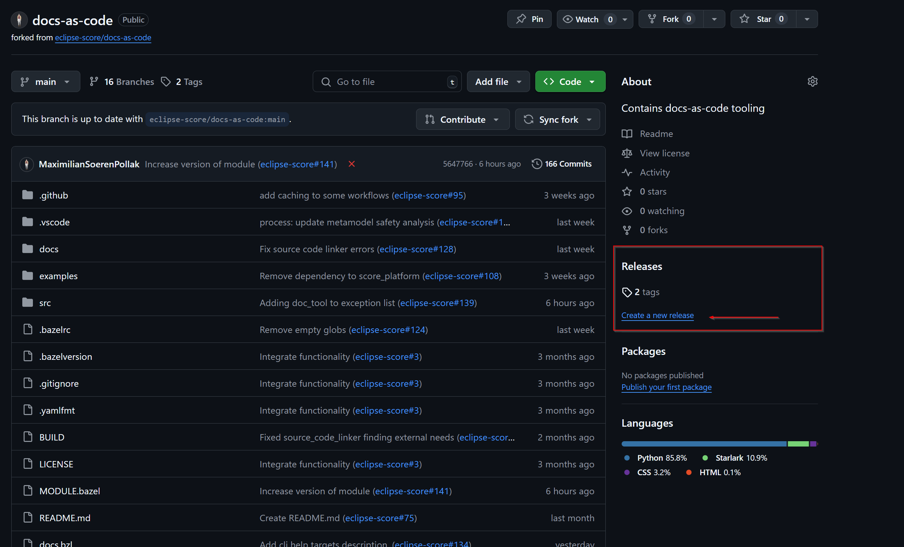
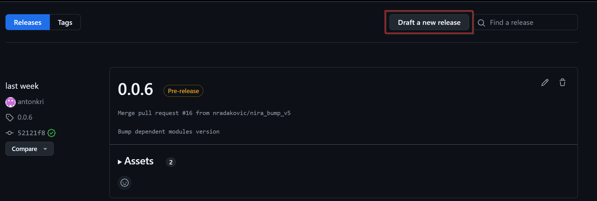
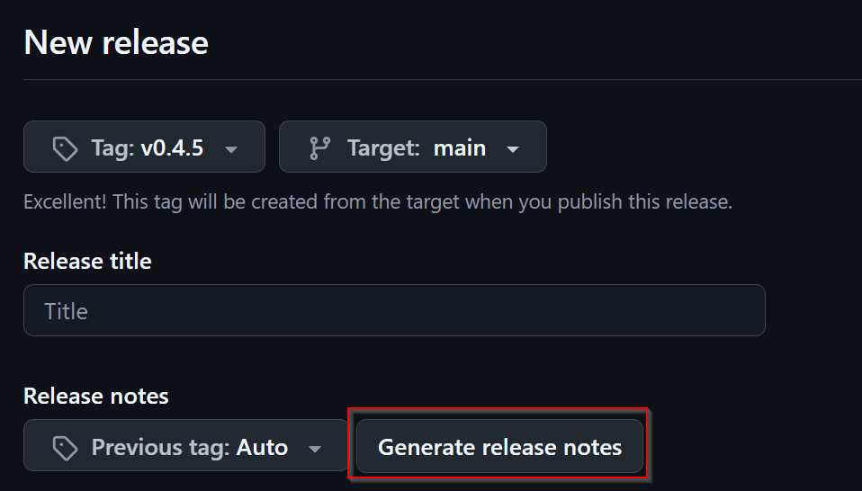
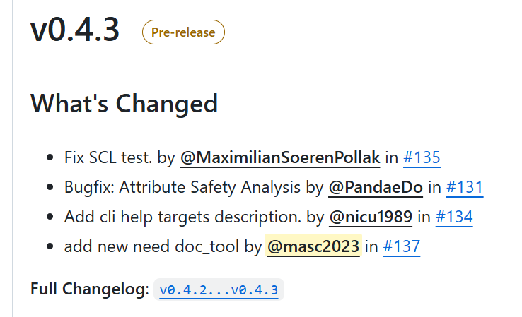

Module Release Manual#
Overview#
In order to use different Modules via the Bazel ecosystem, the Modules have to be released and registered in the S-CORE Bazel Registry. This short manual will show you the steps necessary to create a release and make it available for other Bazel Modules.
Prerequisites#
Before starting the release process, ensure you have:
Write access to the GitHub repository which contains the to be released Module
Access & ability to create pr’s (via Fork or otherwise) to the S-CORE Bazel registry repository
All necessary changes merged into the main branch
Understanding of semantic versioning principles
For further and more detailed information take a look at the Release Management Plan (doc__platform_release_management_plan).
Module Release Process#
1. Verify Main Branch Status#
Navigate to your GitHub repository and ensure that all wanted changes are merged into the main branch.
2. Update MODULE.bazel Version#
Ensure that the MODULE.bazel version matches the version you are about to release:
module(
name = "your_module_name",
version = "x.y.z", # This should match your release tag
compatibility_level = 0,
)
Important
If the version in the MODULE.bazel is different from the one you want to release, you need to update them to match
Follow semantic versioning (SemVer) principles:
MAJOR: Incremented for incompatible API changes.
MINOR: Incremented for backward-compatible functionality additions.
PATCH: Incremented for backward-compatible bug fixes.
For a more detailed description of when to update which version look at the “Identification” section of Release Management Plan (doc__platform_release_management_plan)
If you have a major version change that breaks backwards compatibility, then make sure to also increase the compatibility level inside the MODULE.bazel file.
The compatibility level should be the lowest supported major version that this new version is still compatible with.
1. Create GitHub Release#
Create a new release:
Go to the GitHub repository page
On the right-hand side, click ‘Create a new release’

{kind=link}
{kind=link}
If this is the case, you then can create a new release via this button on the following screen.
{kind=link}

Create a release tag
Create a new tag following the format vx.y.z (e.g., v1.2.3):
The tag should match exactly with the version in
MODULE.bazelUse the
vprefix for consistencyTarget the main branch
{kind=link}
{kind=link}
5. Write Release Notes#
Add meaningful release notes that document the changes you made since your last release.
You can use the generate release notes button to get a good starting point.
{kind=link}

This then will give you something similar to this:
{kind=link}

For an official release (note) you need to consider the Release Management Plan (doc__platform_release_management_plan) and follow the process as in gd_guidl__rel_management.
6. Set Pre-release Status (if applicable)#
Ensure all entered information is correct before you release. Check the pre-release box if necessary
{kind=link}
7. Register in Bazel Central Registry#
After publishing the GitHub release in the Module repository, you need to add the Module to the Bazel Central Registry:
8.1 Copy MODULE.bazel#
Copy the MODULE.bazel file from your released version to the registry structure:
# Navigate to your local copy of the Bazel Central Registry
cd bazel-central-registry
# Create the module directory structure if it doesn't exist
mkdir -p modules/your_module_name/x.y.z
# Copy the MODULE.bazel file
cp /path/to/your/project/MODULE.bazel modules/your_module_name/x.y.z/
8.2 Calculate Archive Hash#
Calculate the SHA256 hash of the release archive via the following command:
curl -Ls "https://github.com/your_org/your_repo/archive/refs/tags/vx.y.z.tar.gz" | sha256sum | awk '{ print $1 }' | xxd -r -p | base64 | sed 's/^/sha256-/'
# output will look something like this:
# sha256-s48hf6x3E7XvwgnrDMnKI/97PZju4haQnF0AnPXK9VE=
Here is a convenient function to calculate the hash that you can add to your .bashrc file
function calcHash() {
curl -Ls "$1" | sha256sum | awk '{ print $1 }' | xxd -r -p | base64 | sed 's/^/sha256-/'
}
# use it like so:
calcHash "https://github.com/your_org/your_repo/archive/refs/tags/vx.y.z.tar.gz"
# It will then give you the correct sha you can use for the source.json
# e.g. sha256-s48hf6x3E7XvwgnrDMnKI/97PZju4haQnF0AnPXK9VE=
8.3 Create source.json#
Create a source.json file in the module version directory:
{
"integrity": "<calculated_hash>",
"strip_prefix": "your_repo_name-x.y.z",
"url": "https://github.com/your_org/your_repo/archive/refs/tags/vx.y.z.tar.gz"
}
Note: The strip_prefix should match the top-level directory name in the archive, which is typically repository_name-version.
9 Add Release to metamodel.json#
Inside modules/your_module_name/ if not already there create a metamodel.json file, add your release version to it.
Here is an example file
{
"homepage": "<the homepage of your repository / documentation>",
"maintainers": [
{
"name": "<Name>",
"email": "<E-Mail>",
"github": "<Github Username>",
"github_user_id": "<Your GH User ID as NUMBER>"
}
],
"repository": [
"github:<your-org>/<your-repo>"
],
"versions": [
"0.0.7",
"0.0.8",
"0.1.0"
],
"yanked_versions": {}
}
10. Verify Module Registration & Create a PR#
Before submitting your changes, verify that the Module is correctly configured:
# In the bazel-central-registry directory
bazel run //tools:verify_modules
This command will: - Validate the Module structure - Check that all files are present and correctly formatted - Verify that the archive can be downloaded and extracted - Ensure the Module can be built successfully
If everything is green, create a PR that includes your changes.
Note
This just does the same test that the CI does. This is a helper to find issues locally before pushing the changes.
Your Module Should now Be Available#
Once your pull request is merged into the main branch of the Bazel Central Registry, your Module becomes available for use as a dependency in any other Bazel project.
Users can now add your Module to their MODULE.bazel file:
bazel_dep(name = "your_module_name", version = "x.y.z")
# example
# bazel_dep(name = "score_process", version = "1.0.4")